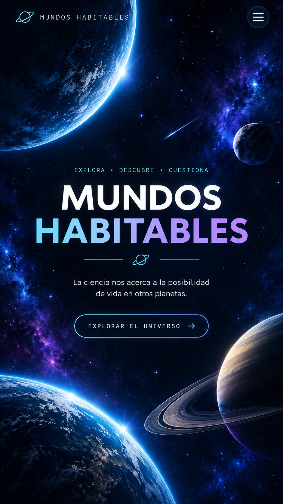

Orbitan otras estrellas
Los exoplanetas forman parte de sistemas planetarios diferentes al nuestro.

Explorar el universoUn mundo habitable es un planeta o cuerpo celeste que puede presentar condiciones adecuadas para que exista vida. Entre los factores que se estudian están la presencia de agua líquida, una temperatura apropiada, una atmósfera y una fuente de energía.
En este sitio encontrarás información sobre la habitabilidad planetaria, los factores que pueden favorecer la vida y cómo la biología, química, física, matemáticas e informática ayudan a estudiar otros planetas y exoplanetas.
Explora cuatro factores que intervienen al estudiar la habitabilidad. Activa cada uno y observa cómo cambia este modelo conceptual.
Esta interacción es una representación educativa: activar o desactivar factores no calcula una probabilidad real de vida.
Son planetas que orbitan estrellas diferentes al Sol. Algunos se encuentran en zonas donde podrían existir condiciones favorables para la vida.
Los exoplanetas forman parte de sistemas planetarios diferentes al nuestro.
Algunos podrían encontrarse en una zona habitable y presentar condiciones favorables para la vida.
La habitabilidad se estudia a partir de varias condiciones que pueden favorecer la existencia de vida.
Debe permitir que el agua permanezca líquida de forma estable durante largos períodos.
Regula la temperatura y la presión, y puede proteger la superficie de la radiación nociva.
La vida necesita energía para mantener sus procesos.
El agua permite que las moléculas necesarias se disuelvan y reaccionen.
Conoce los dos mundos destacados en nuestro proyecto y descubre por qué despiertan interés al estudiar la habitabilidad.
Un exoplaneta destacado en nuestro proyecto como uno de los mundos que despiertan interés al estudiar posibles condiciones favorables para la vida.
Arrastra el planeta para explorarloOtro de los mundos destacados en nuestro proyecto para acercarnos a la pregunta de qué condiciones podrían favorecer la vida.
Arrastra el planeta para explorarloModifica las condiciones del planeta y observa cómo cambian, de manera conceptual, sus posibilidades de habitabilidad.
Explora cómo la distancia a la estrella, la atmósfera y el agua líquida pueden influir en la habitabilidad.
Las condiciones del modelo se encuentran dentro de un rango favorable.
La simulación representa condiciones de habitabilidad de manera didáctica y no demuestra la existencia de vida.
Profundiza en nuestra investigación sobre los mundos habitables y descubre más información, conceptos científicos y material visual en la presentación del proyecto interdisciplinar.
Una mirada complementaria a la posibilidad de vida más allá de la Tierra.
El enlace se abrirá en una pestaña nueva.
Fuentes consultadas para comprender la habitabilidad planetaria y conocer algunos exoplanetas estudiados por la comunidad científica.
González, N., & González, N. (2025, 4 de diciembre). Exoplanetas - NASA Ciencia. NASA Science. https://ciencia.nasa.gov/universo/exoplanetas/
NASA. (s. f.). Kepler-452 b - NASA Science. Science.NASA.gov. Recuperado el 18 de octubre de 2026, de https://science.nasa.gov/exoplanet-catalog/kepler-452-b/
NASA. (2024, 24 de octubre). TRAPPIST-1 e - NASA Science. Science.NASA.gov. https://science.nasa.gov/exoplanet-catalog/trappist-1-e/
Ramírez, D. L. C. (2016, 9 de mayo). Habitabilidad planetaria. Letras Libres. https://letraslibres.com/revista-espana/habitabilidad-planetaria/
Ribas, I. (2022, 7 de noviembre). Qué tiene que tener un planeta para que sea habitable. https://www.nationalgeographic.com.es/ciencia/que-hace-que-planeta-sea-habitable_19036